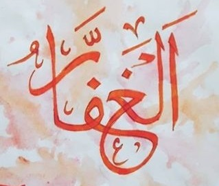

Mağfiret isimlerinden ikisi mübalağa sîgasında:
Yeryüzünde henüz iki insan varken, ilk Arefe gününde Rahmet tepesinde, Hz Adem
bazı kelimeler öğrenir ve ilk tevbeyi onunla yapar.
2:37 innehû huvet-tevvâbur-rahîm
O, tevbeyi kabul buyuran ve rahmeti sınırsız olandır
Âdemoğluna tahsis edilen dünya, günahın bedeli değil, belki tevbenin ödülüdür.

Uzun yıllar sonra, Hz Nuh kavmine şöyle nida ediyordu:
71:10 istaġfirû rabbekum innehû kâne ġaffârâ
"Rabbinizin sizi bağışlamasını isteyin, O çok bağışlayıcıdır"
Bilmem kaç bin sene sonra, belki yine bir Arefe gününde Rahmet tepesinde, Nebilerin mühürü (Salât ve selâm ona) insanların akın akın Allah'ın dinine girdiğini görüp tesbih ve istiğfar ediyordu. Nasr Suresi orada indirildi:
110:3 vestaġfirhu innehû kâne tevvâbâ
... bağışlanmayı dile, O tevbeyi çok kabul edendir